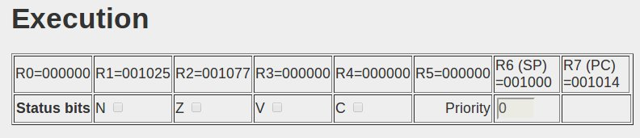

The simulator is implemented in Javascript; it models a PDP-11/40 computer with a disk, teletype, and clock.
The simulator itself was written by Julius Schmidt who wanted to run 1976 Unix V6. You can run Unix V6 on his machine at his site pdp11.aiju.de. That version of the code downloads an image of Unix V6 copying it to the emulated disk (i.e. a big Javascript int[]), and then starting it. If you have a good machine, and you are running a decent Javascript (such as that in the Chrome browser), his emulated PDP-11 runs Unix at almost the same speed as the original hardware. (It shows number of instructions per second, and it's close to 1 million instructions per second.) Create a file in C, compile it, run it. Everything works. (But it is Unix-V6. You have to use 'ed' as your editor. You can switch a setting and have a full character set, but by default it is TTY-33 so there are many missing characters - e.g. '{' is /(. The C dialect is 1976; more than a little archaic.)
The exercises for CSCI131 use the bare machine - no operating system. The simulator is introduced in the lecture 04PDP11.pdf It is presented in a HTML page with four tabs.
The first tab has a text area where you can enter the assembly language code for your PDP-11 program. The code can be typed in directly, or you can load code from a file on your own computer that you have created using some preferred text editor.
The assembler that has been added to Julius Schmidt's Javascript system is a simple absolute assembler. You specify the locations where your instructions and data are to be stored. There is no provision for linking multiple files; a program must be complete.
The assembly directives that are supported are:
All numbers used must be octal (no preceding 0, this isn't C/C++). The lecture 05PDP11Details.pdf has an introduction to the instruction set and addressing modes of the PDP-11. The PDP-11-40 Manual has more details of instructions.
On a bare PDP-11, the first 1000octal locations are typically reserved. The lowest order addresses are used for interrupt vectors (all explained in the lectures). The system stack starts at 776 (octal) and grows down. So programs will typically have a start address of 1000.
The first example, as in the lecture notes, will be a program that copies a string and determines the length of the string. An equivalent C++ program would be something like the following:
(The C++ code has no output. You would have to run it with the gdb debugger and inspect data in memory. Which is appropriate, because this first PDP-11 assembly language program doesn't generate any output and results must be viewed via a memory dump.)
The PDP-11 Assembly language code that should be typed into the textarea in the web-page is:
; Program to copy and determine length of string .origin 1000 start: mov #msga, r1 mov #msgb, r2 clr r0 l1: movb (r1)+, (r2)+ beq done inc r0 br l1 done: halt msga: .string "A string whose length is to be determined" msgb: .string "Different string that should get overwritten" .end start
The program uses registers r1 and r2 as pointers; and register r0 will be used to accumulate a count that will give the length of the copied string. Registers r1 and r2 are loaded with the byte addresses of the source string and destination area. The program loops, copying a byte from the source to the destination. The registers are updated after each byte is copied. The loop terminates when a nul byte was copied to mark the end of the string; otherwise register r0 is incremented and the loop repeats.
The code should be copy-pasted into the code area:
The HTML button "Assemble" invokes the assembly process. This program should assemble without errors. The code is automatically loaded into the memory of the simulated PDP-11.
The first pass of the two pass assembly process works out the locations that will be used for instructions and data elements. All labels (names of data elements, labels used on instructions that get referenced in branches and jumps) are entered into the symbol table. When running programs, or inspecting memory dumps, you need to know the address of the data elements that you wish to view.
The generated symbol table can be viewed in the "Symbol Table" tab.
The 'Program execution' tab has the controls and displays for program execution.
Programs can be executed in single-step mode - one instruction at a time, under user control (use the "Step" button to execute the next instruction). Alternatively, the program can be run in step-step mode; the program runs continuously (it's slowed down considerably, by delays between each instruction, so that a user can observe what is going on). If it's running in step-step mode, clicking the "Step" button will put it back in single step mode.
The "Restart" button should reset the states of machine and registers to what they were when the program was just loaded, allowing the execution process to be started over agin.
As the program executes, the line with the last executed instruction is highlighted in the "Generated code" text area:
If the program is too long to appear in its entirety, the textarea should scroll to show the highlighted instruction.
The registers, status flags, and priority settings are updated as each instruction is executed.
The combination of register display and instruction highlighting allow the user to observe in detail the execution steps. If a user wants to watch in detail, he/she uses the single-step "Step" button; but when boredom sets in, the "Step-Step" button can be used to get the program to run to completion.
Execution terminates when a halt instruction is reached. (All memory is initialized to 0; 0 is the op-code for "halt". So if an erroneous program jumps to some random unused part of memory it immediately halts.)
Program output to the simulated teletype device appears in the text area that is part of the image of an ASR-33 model teletype. If a program is to read input, the mouse must be clicked in this same text area before characters are typed. (Characters typed in are not printed automatically; the program must echo characters if display is needed.) Input and output are slowed so that wait loops and interrupt handling can be observed (in Step-Step mode, speed works out as about twice as fast as the original ASR-33 hardware).
The "Dump memory" tab has a control and a text area. The text area is used to display memory locations and their contents. Each line in the memory dump shows the contents of 8 words (16 bytes) of memory. The leftmost column shows the address of the first word of that line.
The "Dump memory" HTML button is used to get the current contents of memory displayed.
The program does not have to terminate before you take a memory dump. If you are running in single step mode, you can at any time switch tabs and use the "Dump memory" button to get the memory displayed.
There are several example PDP-11 programs in the PDP-11 details lecture. They illustrate basic data manipulations, loops, function calls and use of stack, wait-loop I/O, 'supervisor calls' and interrupt handling. They build up to a kind of simplified interrupt driven operating system.
The Compilers lecture and associated assessment tasks show how to construct a compiler for a small subset of Basic (? well, a Basic-like language) that generates code that can run on the simulated PDP-11 with the primitive OS and a systems library (the limited equivalent of Linux's libc).
Some of these programs are included in the download package.
int data[16];
int* ptr = data: - int val = *ptr;.)
int data[16]; int ndx=0;
int val = data[ndx] array subscripting code.)
While you can probably run the system from this web-site, it's likely to be more convenient for you to download the package onto your own machine and simply open the main page as a local file.
Package for download (tar.gz format). Package for download (zip format).